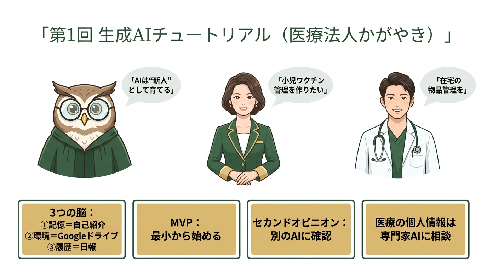

2人のホストが「医療現場のAI活用・最初の一歩」を対談形式で深掘りします（NotebookLM Deep Dive ／ タイトル：「生意気なAI部下のマネジメント術」）
参加者: 長田（コーチ）／ 平田 節子（受講者・医療法人かがやき プロデューサー）／ 藤井 浩史（同 クリニック院長）
日時: 2026年5月26日（火） 13:59〜15:24（約1時間25分）
形式: オンライン（Zoom）
位置づけ: 平田さん・藤井さんにとっての初回。医療法人かがやき（診療所4つ・約100名規模）のAI活用、最初の一歩。
医療法人かがやきの平田節子さん（プロデューサー）と藤井浩史院長（34歳・院長4年目）に、長田さんがAIの「向き合い方」を教えた初回。長田さんは冒頭で 「AIを技術的にどうこうではなく、人間と同じく立場ごとのエキスパート、そして"新人"として扱う」 という指導方針を宣言。各自の課題（平田＝小児ワクチン管理システム / 藤井＝在宅の物品管理システム）を起点に、話は「やりたいこと」より一段深いゴールの先へ。技術論には踏み込まず、3つの脳（①メモリ＝自己紹介、②環境＝Googleドライブ、③作業履歴＝日報の自動化）、MVP（最小単位）とフローチャート設計、セカンドオピニオン、医療情報・個人情報の扱い（専門家になってもらって聞く）、議事録というインフラ といった運用の土台が一通り示された。技術より姿勢の回。次回までの宿題は「この議事録をClaudeに読ませ、同じチャットで自己紹介から実践を始める」こと。
平田さんが、法人内で最もAIを継続している人物として藤井院長を長田さんに紹介した。
| 項目 | 内容 |
|---|---|
| 藤井浩史先生 | 34歳・30歳で院長就任・院長4年目 |
| 医療法人かがやき | 診療所4つ・全体 約100名 規模・理事長53歳（市橋亮一氏） |
| 平田さんの拠点 | 名古屋駅の新事務所が中心（岐阜本院でも活用想定） |
藤井先生は「ずっとチャットのやり取りをしながらなんとかやっている」段階。医療現場の多忙の合間を縫って独学でAIに食らいついている2人 に、長田さんが伴走するかたちで始まった。
AIを技術的にどうこうという形ではあまり言いません。 それよりも、AIを人間と同じように、立場ごとのエキスパートとして、どう扱うのか がメインになります。
「使えない」が出てきたら、「使えないようなインプットしかできなかったんだ」と捉える。 これが一番大事です。部下に「何やってんだよ」となってたのは、言い方が悪い。じゃあどういう言い方をすればいいんだろう——それがこのチュートリアルのテーマです。
長田さんは「まず何をやりたいか」を聞いた（コーチング由来の問い：GROWモデル / SMARTゴール / 「ゴールの先に何があるか」）。
| つまずき | 内容 |
|---|---|
| ルールが多い | 「このワクチンとこのワクチンは一緒に打っていいが、こことここは 2週間空けなければいけない」等の場合分けが大量 |
| 保存できない | 1回分は出せるが「Aさんのはこれ、次にBさんを入れたら…」と 個別保存・切り替えができない |
| 予定変更に追従できない | 「Aさんが体調不良で打つ日が変わった → その後のスケジュールも連動して変わる」ができない |
在宅の物品管理を…と思ってるんですけど、自分で考えても 壮大やな と感じていて。イメージがつくところと、つかないところが両方あって。
（ワクチンは）この場合はこう、この場合はこう…全然シンプルじゃないじゃないですか。シンプルにできても、できた後に「その先は？」と自分でなっちゃうかもしれない。
専門用語で頭文字3つ、MVP。「ミニマル・バイアブル・プロダクト」。一番小さなサンプル品をまず作って、その後に機能をつけていく。（ワクチンなら「保存機能」は後回し。まず場合分けだけで1回分を出す最小単位から）
① 文章で依頼 する → ② AIに 「私の言ったことをフローチャートにして見せてくれませんか？」 と頼む（理解の確認）→ ③ 「具体的にどんな画面になるか」 を聞く → 繰り返す
相手（AI）は「システムを要求している＝エンジニアかな」と思い込み、エンジニア用語でいっぱい返してくる。フローチャートなら、専門用語の氾濫を避けてお互いの理解をそろえられる。
一番重要なのは 「自分はどんな人なんだ」 を第一の脳に覚えておいてもらうこと。「これからお付き合いよろしくね。私は◯◯で、どこで生まれて、何歳で、こんな経歴、こんな考え方」——それを全部覚えてね と最初に伝える。
AIは 記憶容量が小さく、「金魚の脳」 とも呼ばれる。だから自己紹介や前提は、明示的に覚えさせる必要がある。
Geminiは"雲の上"に住んでいて、パソコンの中にはいません。 だからファイルがパソコンの中にあっても見てくれない。Geminiはグーグルだから Googleドライブに入れれば、そのドキュメントも見てくれる。リンクを貼れば見てくれる。これが「環境を作る」ということ。
うちは医療機関なので、Google Workspaceの中に いろんな個人情報が散らばってる んですけど。それは危険じゃないですか？
| AI | 過去の会話 |
|---|---|
| Gemini | 過去検索ができない |
| Claude | 1か月ほど前から見られるようになった |
| ChatGPT | だいぶ覚えている |
今日話したことを、終わったら 自動で日報にしてもらう。すると「あの日に話したじゃん」という会話ができる。ポイントは 「AIが読みやすい形式」 で書かせること。
ドライブに置いておくところから、いつでも引き出せる場所を作って、自動的にチャット履歴を残していく形がうまく作れるといいのかな。ドライブでやるのか、Obsidian なのか、Notionとかでやるのか。
さすが34歳になると Obsidian をお使いになってるんですね。それが一番いいかなと私は思ってます。
私もそこのエキスパートではないので——これは Gemini・Claude・ChatGPTの三人ともに聞いた方がいい。「あなたは医療系の弁護士でありSEです。ファイルはどこに保存して、個人情報はどう扱うべきか、あなたに渡して大丈夫なのか」 ——そういうところから聞いていく。これが今日の一番大事なところかもしれません。
あるデータを扱わせたら、AIは 名前を一文字も出さず、会員番号も末尾4桁以外をバツ表示 にしてきた。「あなたは個人情報にかなり敏感なんだね」と聞いたら「当たり前です」と。※ ID・パスワードは 1Password のような管理ツールに入れ、AIには「使わせるが中身は見せない」運用にする。
「交代させると違うAIが出てくるんですか」（平田）／「新しいチャットを開くと、毎回別の人なんですよ」（長田）。とはいえ実際に担当を切り替えるのはごくまれで、基本は同じ相手と粘り強く対話する のが大事。どうしても噛み合わない時の最後の手段。
システムを作るときも、できた後も「これ大丈夫かな？」を 別のAIにチェックしてもらう。Claudeに「別のAIに見て」と言うと「エキスパートに見てもらいます」と言うが——一族だから甘い。Claudeで作ったら、ChatGPTやGeminiにチェックさせる。すると厳しくなる。
PDCAを何度も回転していく みたいな。まず計画のところで「この計画は大丈夫か」を見てもらって。
ただの議事録じゃなくて、冒頭に プロパティ（日付・タイプ・参加者・最大の懸念・ステータス・タスクリスト） をタグとして付ける。ここがあると、AIがすっと見に行ける。 しかも 文字起こしの段階から「これはこうだな」とAIが自分で判断してタグを入れてくれる。
① Zoom録音 → NotebookLM や Gemini で要約 → ② Obsidianに議事録化するのは Claude（「Claudeが一番日本語が上手」）。※本議事録も、文字起こしをサブエージェントが精読 → Claudianが清書、という分業で作られています。
「違うじゃない」を言葉で伝えるのは難しい。スクショを撮って見せる、URLを貼って見せる。 AIの画像認識はものすごいので、画像で伝えるのが一番速い。
「タイピングとスピーキング、どっちが思考を妨げない？」（長田）／「タイピングのほうが思考が深くなる」（平田）。AIは回転が速い。こちらの思考がクリアでないと、変なインプットをしてしまう。
21:9の横長モニター が使いやすい。長田さんは佳境になるとパソコンをもう一台つなぎ、iPadも置いて 4〜5画面 にする。（平田さんは現在13インチ）
AI関連の技術書・思想系の本は読んじゃダメ。 必ず日付を見る。半年前の情報はもう「嘘」。古いんじゃなくて、なかったり変わったりしている。本になった瞬間に古い。
始めるときに大前提で読ませる 規則。「節子さんの憲法」。これだけは絶対やっちゃダメ、嘘はつかない ——そういう行動規範。（長田さん「これはちょっと調べてお送りします」と約束）
今日はとにかく 記憶と計画（PDCA） の部分。それは議事録を見て、読ませて始めてください。Claudeに聞いても解決しない、Claudeの問題だったら 私に聞いてください。「言うことを聞いてくれない」とか変だとか——部下のことで「あいつ分かんないなぁ」って相談するのと同じように。
| 課題 | 詳細 |
|---|---|
| 医療情報の個人情報リスク | Google Workspaceに個人情報が散在。Gemini連携の安全性は 医療法専門家への相談が必須 |
| 節子さんのClaude設定が空 | インポートしたはずのメモリ／プロフィールが反映されていない。次回までに要整備 |
| 藤井さんの作業時間 | 夜中・寝不足での作業が常態化。集中できる時間の確保 が課題 |
| ワクチン管理の本質的複雑さ | 「シンプル」に見えて場合分け・連動・保存が必要。MVPで段階的に がカギ |
長田さんは技術を一切教えず、代わりに 「AIをどう扱う存在として位置づけるか」 という座標軸（新人・3つの脳・MVP・セカンドオピニオン）を最初にまるごと渡した。
(1) 医療現場特有の"個人情報"が最初の論点に：平田さんの最初の鋭い問いは「個人情報は危険では？」だった。医療法人のAI活用は、利便性より先に"安全の設計"が問われる。
(2) 藤井院長という"継続できる人材"の存在：34歳・夜中にAIと格闘する藤井先生は、組織にAIを根付かせる「最初の伝道者」候補。経営層（平田）＋現場の熱量（藤井）の二人三脚は理想的な布陣。
(3) 「やりたいこと」が早くも経営課題と地続き：ワクチン管理も在宅物品管理も、単なる業務効率化でなく現場の安全と質に直結する医療インフラ。初回から種がまかれている。
AIを技術的にどうこうではなく、人間と同じく立場ごとのエキスパート、新人として扱う。
「使えない」が出てきたら、「使えないインプットしかできなかったんだ」と捉える。これが一番大事。
Geminiは 雲の上に住んでいて、パソコンの中にはいない。 だからGoogleドライブに入れて、リンクを貼る。
「あなたは医療系の弁護士でありSEです」 と言って、個人情報を渡して大丈夫かを聞く。これが今日の一番大事なところ。
考えてくれるのは向こうなんだけど、こっちもクリアじゃないと、ちゃんとしたインプットができない ってことですね。
（在宅物品管理は）自分で考えても 壮大やな と感じていて。